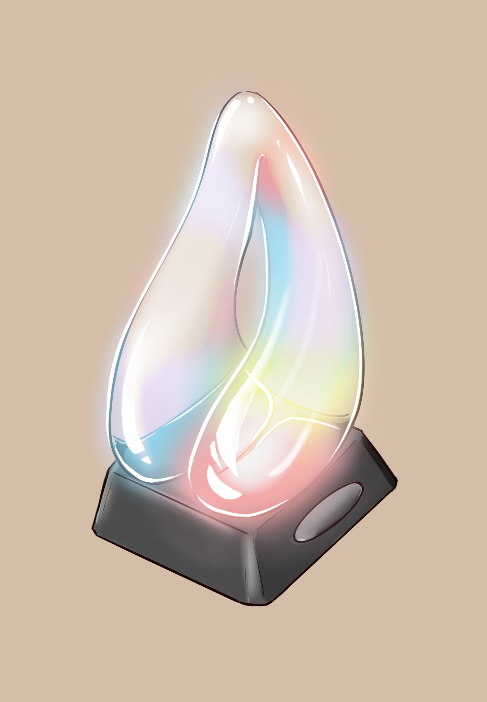

The sharing lamp
U&S | M,D,C
A design project guided by behaviour change theories to help couples communicate their emotions at home better. Using habit theory and COM-B, a lamp was created that set the colours of the two sides based on how each person indicated to feel throughout the day. Allowing the partner to see what their partner felt that day, sparking conversations, understanding and empathy at home.